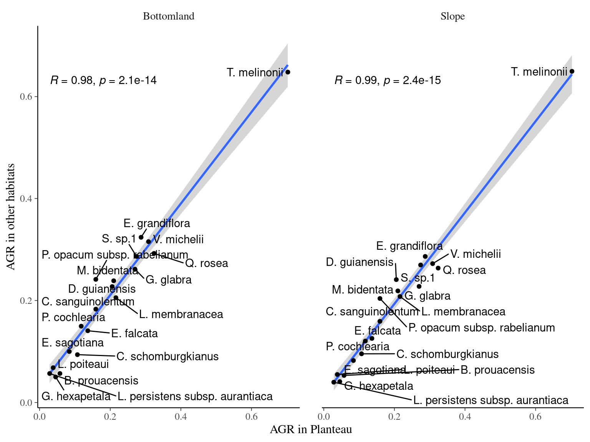
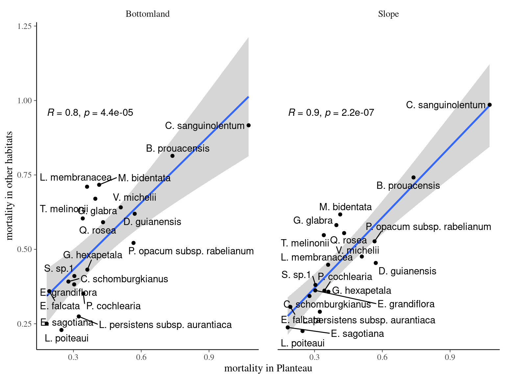

Chapter 2 Performance descriptors
2.1 Growth
paracou <- vroom::vroom("data/paracou.tsv") %>%
filter(BotaSource == "Bota") %>%
filter(!is.na(Xutm), !is.na(Yutm))
paracouXY <- paracou %>%
st_as_sf(coords = c("Xutm", "Yutm"),
crs = '+proj=utm +zone=22 +datum=WGS84 +units=m +no_defs +ellps=WGS84 +towgs84=0,0,0')
paracou <- left_join(paracou,
st_intersection(readshp("data/TopographicLevels/TopographicLevels.shp"), paracouXY) %>%
st_drop_geometry() %>%
select(idTree, TypeTopoEN))
paracou %>%
group_by(TypeTopoEN, Genus, Species, idTree) %>%
arrange(CensusYear) %>%
mutate(FirstDead = first(CensusYear[CodeAlive == 0])) %>%
mutate(FirstDead = ifelse(is.na(FirstDead), max(CensusYear)+1, FirstDead)) %>%
filter(CensusYear < FirstDead) %>%
summarise(AGR = (last(DBH) - first(DBH))/(last(CensusYear) - first(CensusYear))) %>%
na.omit() %>%
group_by(TypeTopoEN, Genus, Species) %>%
summarise(AGR = median(AGR)) %>%
pivot_wider(names_from = TypeTopoEN, values_from = AGR) %>%
vroom::vroom_write("data/species_growth.tsv")vroom::vroom("data/species_growth.tsv") %>%
kable(caption = "Median of annual growth rate of all individuals across species (cm/year).") | Genus | Species | Bottomland | Plateau | Slope |
|---|---|---|---|---|
| Bocoa | prouacensis | 0.0568411 | 0.0574726 | 0.0530516 |
| Chaetocarpus | schomburgkianus | 0.0938177 | 0.1070506 | 0.0954930 |
| Chrysophyllum | sanguinolentum | 0.1830880 | 0.1591549 | 0.1591549 |
| Dicorynia | guianensis | 0.2273642 | 0.2054699 | 0.2410061 |
| Eperua | falcata | 0.1406983 | 0.1364185 | 0.1256383 |
| Eperua | grandiflora | 0.3239940 | 0.2873631 | 0.2864789 |
| Eschweilera | sagotiana | 0.1000402 | 0.0839984 | 0.0823215 |
| Goupia | glabra | 0.2614688 | 0.2699950 | 0.2276800 |
| Gustavia | hexapetala | 0.0500201 | 0.0454728 | 0.0409256 |
| Lecythis | persistens subsp. aurantiaca | 0.0568411 | 0.0284205 | 0.0397887 |
| Lecythis | poiteaui | 0.0682093 | 0.0384167 | 0.0548810 |
| Licania | membranacea | 0.2055751 | 0.2159960 | 0.2077856 |
| Manilkara | bidentata | 0.2387324 | 0.2097952 | 0.2188968 |
| Pradosia | cochlearia | 0.1496814 | 0.1177507 | 0.1205365 |
| Protium | opacum subsp. rabelianum | 0.2414765 | 0.1591549 | 0.2039962 |
| Qualea | rosea | 0.2924253 | 0.3239940 | 0.2635857 |
| Symphonia | sp.1 | 0.2864789 | 0.2744051 | 0.2696792 |
| Tachigali | melinonii | 0.6479880 | 0.7029343 | 0.6495382 |
| Virola | michelii | 0.3154678 | 0.3083627 | 0.2723318 |
vroom::vroom("data/species_growth.tsv") %>%
gather(habitat, AGR, -Genus, -Species, -Plateau) %>%
ggplot(aes(Plateau, AGR,
label = paste0(str_sub(Genus, 1, 1), ". ", Species))) +
geom_smooth(method = "lm") +
geom_point() +
facet_wrap(~ habitat) +
ggpubr::stat_cor() +
xlab("AGR in Planteau") +
ylab("AGR in other habitats") +
ggrepel::geom_text_repel()
2.2 Mortality
paracou <- vroom::vroom("data/paracou.tsv") %>%
filter(BotaSource == "Bota") %>%
filter(!is.na(Xutm), !is.na(Yutm))
paracouXY <- paracou %>%
st_as_sf(coords = c("Xutm", "Yutm"),
crs = '+proj=utm +zone=22 +datum=WGS84 +units=m +no_defs +ellps=WGS84 +towgs84=0,0,0')
paracou <- left_join(paracou,
st_intersection(readshp("data/TopographicLevels/TopographicLevels.shp"), paracouXY) %>%
st_drop_geometry() %>%
select(idTree, TypeTopoEN))
paracou %>%
group_by(TypeTopoEN, Genus, Species, idTree) %>%
summarise(death = ifelse(any(CodeAlive == 0), 1, 0),
y_min = min(CensusYear),
y_max = max(CensusYear)) %>%
group_by(TypeTopoEN, Genus, Species) %>%
summarise(mortality = sum(death) / n() / (max(y_max) - min(y_min)) * 100) %>%
pivot_wider(names_from = TypeTopoEN, values_from = mortality) %>%
vroom::vroom_write("data/species_mortality.tsv")vroom::vroom("data/species_mortality.tsv") %>%
select(-"NA") %>%
kable(caption = "Annual mortality rate across species (%/year).") | Genus | Species | Bottomland | Plateau | Slope |
|---|---|---|---|---|
| Bocoa | prouacensis | 0.8140691 | 0.7382382 | 0.7415381 |
| Chaetocarpus | schomburgkianus | 0.3917379 | 0.2777778 | 0.3432003 |
| Chrysophyllum | sanguinolentum | 0.9166667 | 1.0752688 | 0.9856631 |
| Dicorynia | guianensis | 0.6195044 | 0.5711319 | 0.4542607 |
| Eperua | falcata | 0.3594249 | 0.1929970 | 0.3066732 |
| Eperua | grandiflora | 0.3822630 | 0.3031793 | 0.3621195 |
| Eschweilera | sagotiana | 0.2504554 | 0.1814882 | 0.2377101 |
| Goupia | glabra | 0.6700168 | 0.3968254 | 0.5813953 |
| Gustavia | hexapetala | 0.4318123 | 0.3614916 | 0.3575871 |
| Lecythis | persistens subsp. aurantiaca | 0.2745478 | 0.3235578 | 0.2904270 |
| Lecythis | poiteaui | 0.2290951 | 0.2469136 | 0.2256063 |
| Licania | membranacea | 0.7103825 | 0.3602305 | 0.4481651 |
| Manilkara | bidentata | 0.7168459 | 0.4137116 | 0.6172840 |
| Pradosia | cochlearia | 0.3516174 | 0.3437844 | 0.3611642 |
| Protium | opacum subsp. rabelianum | 0.5215420 | 0.5658436 | 0.5268199 |
| Qualea | rosea | 0.5911518 | 0.4310345 | 0.5545826 |
| Symphonia | sp.1 | 0.4103535 | 0.3040354 | 0.3803804 |
| Tachigali | melinonii | 0.6038647 | 0.3411306 | 0.5477308 |
| Virola | michelii | 0.6410256 | 0.5095332 | 0.4759130 |
vroom::vroom("data/species_mortality.tsv") %>%
select(-"NA") %>%
gather(habitat, mortality, -Genus, -Species, -Plateau) %>%
ggplot(aes(Plateau, mortality,
label = paste0(str_sub(Genus, 1, 1), ". ", Species))) +
geom_smooth(method = "lm") +
geom_point() +
facet_wrap(~ habitat) +
ggpubr::stat_cor() +
xlab("mortality in Planteau") +
ylab("mortality in other habitats") +
ggrepel::geom_text_repel()